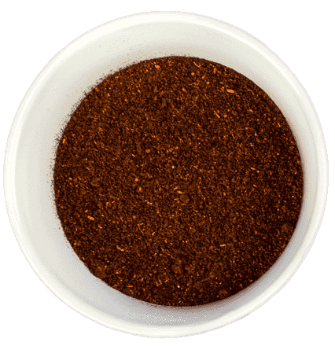
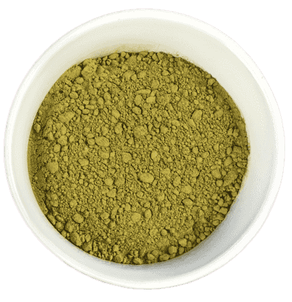

Spice
A spice is a seed, fruit, root, bark, or other plant substance primarily used for flavoring, coloring or preserving food. Spices are distinguished from herbs, which are the leaves, flowers, or stems from plants used for flavoring or as a garnish. Sometimes, spices may be ground into a powder for convenience. Many spices have antimicrobial properties. This may explain why spices are more commonly used in warmer climates, which have more infectious diseases, and why the use of spices is prominent in meat, which is particularly susceptible to spoiling. Spices are sometimes used in medicine, religious rituals, cosmetics or perfume production, or as a vegetable.
Tumeric
Turmeric is a rhizomatous herbaceous perennial plant of the ginger family, Zingiberaceae. It is native to southern Asia, requiring temperatures between 20 and 30°C and a considerable amount of annual rainfall to thrive. Plants are gathered annually for their rhizomes and propagated from some of those rhizomes in the following season.
When not used fresh, the rhizomes are boiled for about 30–45 minutes and then dried in hot ovens, after which they are ground into a deep-orange-yellow powder commonly used as a coloring in Bangladeshi cuisine, Indian cuisine, Iranian cuisine, Pakistani cuisine, and curries, as well as for dyeing.
Although long-used in Ayurvedic medicine to treat various diseases, there is little high-quality clinical evidence for use of turmeric or its main constituent, cur cumin, as a therapy.
Production
India contributes 75% of global spice production.
- India
- Bangladesh
- Turkey
- China
- Pakistan
- Iran
- Nepal
- Colombia
- Ethiopia
- Sri Lanka
Nutrition
Because they tend to have strong flavors and are used in small quantities, spices tend to add few calories to food, even though many spices, especially those made from seeds, contain high portions of fat, protein, and carbohydrate by weight. Many spices, however, can contribute significant portions of micronutrients to the diet. For example, a teaspoon of paprika contains about 1133 IU of Vitamin A, which is over 20% of the recommended daily allowance specified by the US FDA. When used in larger quantity, spices can also contribute a substantial amount of minerals, including iron, magnesium, calcium, and many others, to the diet.
Chili Powder Tumeric MatchaMost herbs and spices have substantial antioxidant activity, owing primarily to phenolic compounds, especially flavonoids, which influence nutrition through many pathways, including affecting the absorption of other nutrients. One study found cumin and fresh ginger to be highest in antioxidant activity. These antioxidants can also act as natural preservatives, preventing or slowing the spoilage of food, leading to a higher nutritional content in stored food.